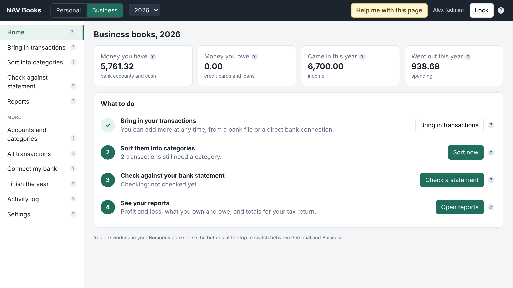

NAV Books
Simple bookkeeping for your household and your small business. Bring in your bank activity, sort it, check it against your statements, and print the reports you need at tax time.
Download for Windows Free · Windows 10 or 11No account, no sign-up. Your books stay on your own computer, encrypted, and nothing is uploaded.

Install it in 3 steps
- Open the download Open your Downloads folder and double-click this file:
NAV-Books-Setup.exeYour browser may first say "NAV-Books-Setup.exe isn't commonly downloaded". That is normal for a new program. Point at that line, click the three dots (...) beside it, then Keep, then Show more, then Keep anyway.
⚠ NAV-Books-Setup.exe isn't commonly downloaded. Make sure you trust NAV-Books-Setup.exe before you open it.
... › Keep › Show more › Keep anywayWindows may then show a blue box saying "Windows protected your PC". That is normal for small free programs. Click More info, then Run anyway.
Windows protected your PCMicrosoft Defender SmartScreen prevented an unrecognized app from starting...
More info
Run anyway - Click Next until it finishes There is nothing to choose. Leave the box ticked if you want a shortcut on your Desktop.
- Open it and choose a password You'll find NAV Books on your Desktop and in the Start menu. The first time, type your name and choose a password. Your Personal and Business books are created for you.
Write the password down somewhere safe. Nobody can recover it for you.
Nothing else to install. It comes with everything it needs, including its own database.
It doesn't need administrator rights, and it only uses the internet if you choose to connect your bank.
What it does
Personal and business, kept apartTwo sets of books from the start. Switch with one click.
Brings in your bank activityLoad a file from your bank or card, or connect your bank so it arrives by itself.
Moves you over from QuickBooks or QuickenBrings in your whole history and files it by year.
Sorts for youTell it once what a payee is for and it remembers.
Monthly statement checkMake sure your books and your bank agree, with a report to keep.
Tax-time reportsProfit & Loss, Balance Sheet, and totals by tax-return line. Print, PDF or Excel.
A record you can stand behindNothing is ever erased. Every change is logged with who, when and where.
Help on everythingEvery button and box has a ? that explains it in plain words.
What you need
- A Windows 10 or 11 PC.
- A file from your bank or card (CSV, QFX or OFX), or your QuickBooks or Quicken export. You can also type entries in by hand.
- Optional: a SimpleFIN Bridge account (about $15 a year) if you want the app to fetch bank transactions by itself.
Questions
- Why does my browser or Windows warn me about the download?
- The program is new and small, so Windows has not seen it often enough to recognise it yet. The warnings are about that, not about anything found in the file. Follow step 1 above to keep and open it.
- Where are my books kept?
- In Documents > NAV Books, one encrypted file per year. They never leave your computer unless you copy them.
- What if I forget my password?
- The books can't be opened without it, and there is no reset. Keep it somewhere safe, and add a second admin user as a spare key.
- How do I back up?
- Settings > Back up now, then copy the dated folder to a USB drive or cloud storage. The copy stays encrypted.
- How do I update to a new version?
- Download again from this page and run the installer again. Your books stay put.
- How do I remove it?
- Windows Settings > Apps > Installed apps > NAV Books > Uninstall. Your books are not deleted.
- Does it file my taxes?
- No. It gives you and your tax preparer the totals for each line. Keep your receipts.
- Is there a Mac version?
- Not yet. This download is for Windows only.
- Something went wrong. What do I do?
- Report the problem here and say what the message said. Never send your books or password.